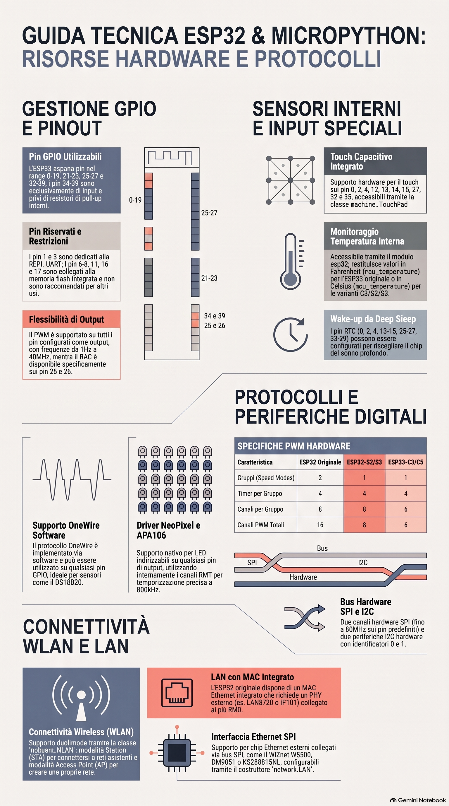

Home / Scheda 1 — Teoria e hardware
Teoria e hardware dell'ESP32
Prima di scrivere una riga di codice conviene capire cosa stiamo programmando. Questa scheda riassume l'architettura dell'ESP32, le sue periferiche e i vincoli da conoscere per progettare in modo affidabile.
L'ESP32 è lo standard de facto per l'IoT: offre un equilibrio senza
precedenti tra potenza di calcolo e versatilità di interfacciamento. Scegliere
MicroPython non è una semplice comodità, ma una decisione strategica:
l'astrazione di alto livello riduce la complessità dello sviluppo bare-metal, mantenendo
però un controllo granulare sull'hardware grazie ai moduli machine
ed esp.
1. Architettura centrale e gestione del calcolo
La gestione della frequenza operativa è fondamentale per bilanciare throughput di calcolo
e budget energetico. Con machine.freq() si può spingere il
dual-core fino a 240 MHz; in contesti di produzione è prassi silenziare i log del vendor
per avere una console seriale pulita.
import machine
import esp
# Silenzia i messaggi di sistema (utile in produzione)
esp.osdebug(None)
# Massime prestazioni computazionali
machine.freq(240000000)
print("Frequenza attuale:", machine.freq())Gestione della flash e longevità del dispositivo
Il modulo esp offre accesso diretto alla flash
(flash_read, flash_write,
flash_erase). Queste operazioni però bypassano il wear
leveling del filesystem (VFS) di MicroPython: scrivere in cicli iterativi può
esaurire rapidamente la memoria (tipicamente ~100.000 cicli di scrittura per cella).
Per salvare dati in modo persistente preferisci il filesystem (open()) e limita l'uso diretto di flash_write ai casi in cui serve davvero.
2. Sottosistemi di comunicazione seriale: UART
La UART è il "sistema nervoso" dell'ESP32: serve la REPL ma anche sensori intelligenti e moduli di telemetria. L'ESP32 dispone di tre controller UART hardware e di una GPIO matrix che permette di mappare TX/RX su quasi tutti i pin.
| Periferica | TX predefinito | RX predefinito | Note architetturali |
|---|---|---|---|
| UART0 | GPIO 1 | GPIO 3 | Riservata alla REPL e al flashing |
| UART1 | GPIO 10 | GPIO 9 | Spesso in conflitto con la Flash SPI |
| UART2 | GPIO 17 | GPIO 16 | Ottimale per uso generale |
| UART1 (SPIRAM) | GPIO 5 | GPIO 4 | Default per varianti con PSRAM esterna |
L'allocazione di pin personalizzati durante l'inizializzazione dell'oggetto UART è la strategia preferibile per evitare interferenze con il bus di memoria interno.
3. Segnali analogici e PWM
PWM e limitazioni operative
Il sistema PWM supporta fino a 16 canali, ma impone un tradeoff: all'aumentare della frequenza (fino a 40 MHz) diminuisce la risoluzione del duty cycle.
- Capacità hardware: 16 canali e 8 frequenze indipendenti per ESP32; 8 canali per S2/S3; 6 per la serie C.
- Vincolo light sleep: in risparmio energetico si riduce a 4 timer e 8 canali — limite critico per illuminazione o motorizzazione sempre attive.
Precisione ADC e conflitti con il Wi-Fi
Per il monitoraggio analogico read_uv() è superiore a
read_u16() perché usa i valori di calibrazione eFuse di fabbrica.
Attenzione: sebbene restituisca microvolt, la risoluzione effettiva è di 1 mV
(valori sempre multipli di 1000).
Il blocco ADC2 (pin 0, 2, 4, 12–15, 25–27) è condiviso con il Wi-Fi. Leggere da questi pin mentre il Wi-Fi è attivo solleva un'eccezione di sistema: usa i pin dell'ADC1 (32–39).
| Attenuazione | Intervallo lineare (approssimativo) |
|---|---|
| 0 dB | 100 mV – 950 mV |
| 2.5 dB | 100 mV – 1250 mV |
| 6 dB | 150 mV – 1750 mV |
| 11 dB | 150 mV – 2450 mV |
Il controllo si completa con i due DAC a 8 bit sui pin 25 e 26, ideali per generare forme d'onda analogiche reali.
4. Infrastruttura dei bus: I2C e SPI
SPI — performance e multiplexing
L'ESP32 implementa due controller hardware: HSPI (ID 1) e VSPI (ID 2). Per le massime prestazioni (fino a 80 MHz) è obbligatorio usare i pin predefiniti; mappando l'SPI su pin non standard tramite la GPIO matrix, la velocità massima scende a 40 MHz per i ritardi di propagazione introdotti dal multiplexing.
I2C — robustezza e scansione
Con due controller hardware (ID 0 e 1), l'ESP32 gestisce array complessi di sensori.
Eseguire i2c.scan() all'avvio è una buona pratica: permette di
validare l'integrità del bus prima delle operazioni critiche.
from machine import I2C, Pin
# Bus 0 predefinito: SDA=19, SCL=18
i2c = I2C(0, scl=Pin(18), sda=Pin(19), freq=400000)
print("Dispositivi trovati:", [hex(a) for a in i2c.scan()])5. Gestione dell'energia e persistenza degli stati
Il Deep-Sleep non è una pausa, ma una modalità operativa che richiede una gestione software granulare per mantenere la coerenza dell'hardware.
Logica di risveglio e RTC
Al risveglio dal Deep-Sleep l'ESP32 esegue un reset completo. Usa
machine.reset_cause() per distinguere un boot da alimentazione da
un risveglio programmato tramite RTC.
Persistenza dei livelli logici: Pad Hold
- Pin RTC: mantengono i pull-up/down nativamente.
- Pin standard (non-RTC): richiedono
hold=Trueall'inizializzazione eesp32.gpio_deep_sleep_hold(True)prima di dormire. - Efficienza: prima dello sleep disabilita i pull-up non necessari per evitare perdite di corrente parassite.
Il deep sleep e il risveglio da segnale esterno sono mostrati nel concreto nella scheda Esempi.
6. Sintesi delle specifiche hardware (tabella di riferimento)
| Specifica | Pin / Range | Note tecniche |
|---|---|---|
| Range GPIO | 0–19, 21–23, 25–27, 32–39 | Range totale dei pin fisici utilizzabili |
| Pin solo input | 34, 35, 36, 37, 38, 39 | Privi di pull-up/down interni; ideali per sensori |
| Pin critici (Flash) | 6, 7, 8, 11, 16, 17 | Evitare: legati alla memoria SPI interna |
| I2C default (bus 0) | SDA=19, SCL=18 | Configurabili su altri pin via software |
| I2C default (bus 1) | SDA=26, SCL=25 | Spesso condivisi con i canali DAC |
| SPI default (VSPI) | SCK=18, MOSI=23, MISO=19 | Supporta 80 MHz (40 MHz se rimappati) |
| SPI default (HSPI) | SCK=14, MOSI=13, MISO=12 | Controller secondario ad alte prestazioni |
| ADC Block 1 | 32, 33, 34, 35, 36, 37, 38, 39 | Sicuro: utilizzabile con il Wi-Fi attivo |
| ADC Block 2 | 0, 2, 4, 12, 13, 14, 15, 25, 26, 27 | Rischio: eccezione se il Wi-Fi è attivo |
| DAC | 25, 26 | Risoluzione 8 bit; segnale analogico reale |
| TouchPad | 0, 2, 4, 12, 13, 14, 15, 27, 32, 33 | Capacitivi; usabili come wake-up |

Approfondimenti proposti
Spunti per chi vuole andare oltre. Sono tutte fonti esterne ufficiali o di riferimento.
Perché MicroPython e non C/C++ (Arduino/ESP-IDF)?
MicroPython permette di prototipare in pochi secondi (niente cicli di compilazione) e di editare il codice via REPL o seriale. C/C++ resta preferibile quando servono determinismo in tempo reale, accesso a driver non ancora esposti o ottimizzazione estrema di memoria. Un buon compromesso è prototipare in MicroPython e, se necessario, riscrivere in C solo le parti critiche.
Differenze tra ESP32 classico, S2, S3 e C3
Le varianti cambiano numero di core, Wi-Fi dual-band o meno, BLE, controller PWM (16 sul classico, 8 su S2/S3, 6 sulla serie C) e USB nativo. La logica MicroPython resta simile, ma i pin e le periferiche variano: consulta sempre il pinout della tua scheda.
Deep sleep: calcolo del consumo e strategie
In deep sleep il consumo scende a decine di microampere. La durata del sonno si imposta
con machine.deepsleep(tempo_ms) oppure ci si sveglia da un segnale
esterno. Disabilitare LED, pull-up e moduli non usati prima di dormire è essenziale per
ottenere il risparmio atteso.
Materiale PDF incluso nel repository
Per approfondire le essenzialità di MicroPython per l'IoT è incluso il volume: